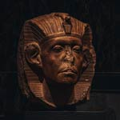

The earliest signs of biology were discovered in several places

Ancient Egypt
(1600 BCE)
Mesopotamia
(c.2112 - c.2004 BCE)
China
(4th century BCE)
India
(1500 BCE)
Ancient Egypt
Over a dozen medical papyri have been preserved, most notably the Edwin Smith Papyrus (the oldest extant surgical handbook) and the Ebers Papyrus (a handbook of preparing and using materia medica for various diseases). Ancient Egypt is also known for developing embalming, which was used for mummification, in order to preserve human remains and forestall decomposition.Mesopotamia
Animal physiology was studied for divination, including especially the anatomy of the liver, seen as an important organ in haruspicy. Animal behavior too was studied for divinatory purposes. Most information about the training and domestication of animals was probably transmitted orally, but one text dealing with the training of horses has survived.China
In ancient China, earlier conceptions can be found dispersed across several different disciplines, including the work of herbologists, physicians, alchemists, and philosophers. The Taoist tradition of Chinese alchemy, for example, emphasized health (with the ultimate goal being the elixir of life). Taoist philosophers also expressed ideas related to evolution, such as denying the fixity of biological species and speculating that species had developed differing attributes in response to differing environments.India
One of the oldest organised systems of medicine is known from ancient India in the form of Ayurveda, which originated from Atharvaveda (one of the four most ancient books of Indian knowledge, wisdom and culture).One of the earliest Ayurvedic treatises was the Sushruta Samhita, an antient text about medicine. It was also an early materia medica, describing 700 medicinal plants, 64 preparations from mineral sources, and 57 preparations based on animal sources.We've got your interest now?
Sign up to recieve our articles by clicking that button right over there!